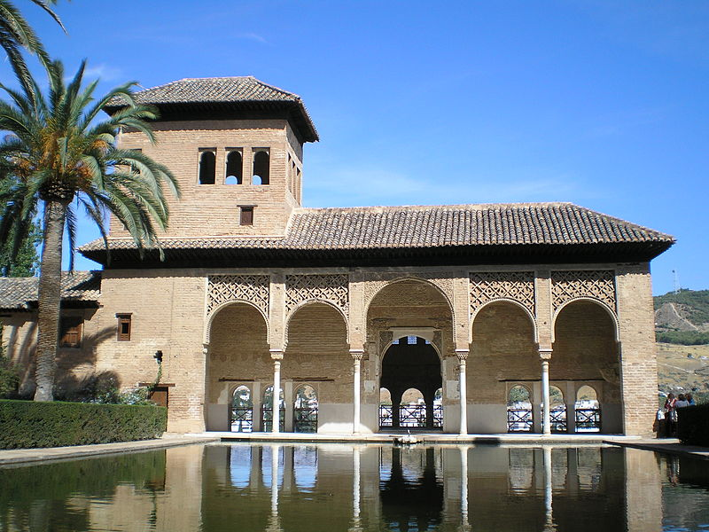
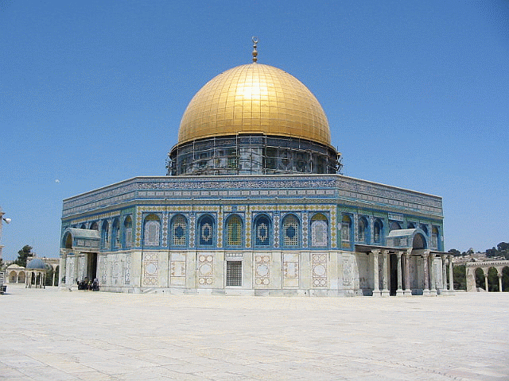
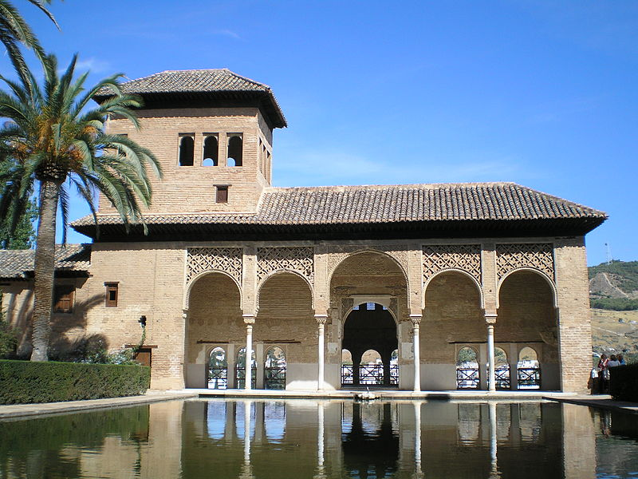
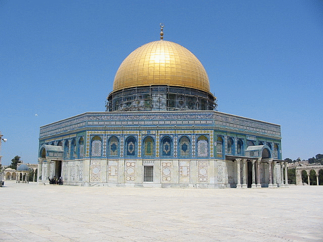

Islamic architecture began in the 7th century CE, incorporating architectural forms from the ancient Middle East and Byzantium, but also developing features to suit the religious and social needs of the society. Examples can be found throughout the Middle East, Turkey, North Africa, the Indian Sub-continent and in parts of Europe, such as Spain, Albania, and the Balkan States, as the result of the expansion of the Ottoman Empire.
 


